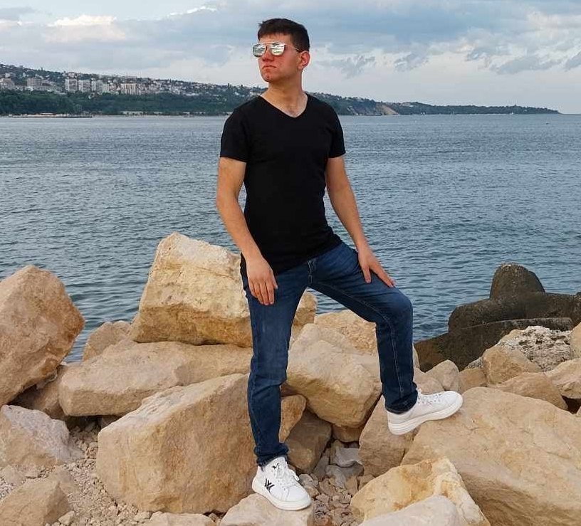

За нас
Кой съм аз?
Аз съм човек, отдаден на мисията за опазване на природата и създаване на устойчиво бъдеще. Този сайт е изцяло създаден от мен, с желание да вдъхновя хората да ценят и пазят околната среда.
Нашата история
Екологичната организация "Зелено бъдеще" е основана през 2023г. с цел да насърчава екологичното съзнание и устойчивото развитие. От тогава до днес организацията успешно е реализирала над 50 проекта, свързани с опазване на околната среда.
Моята мисия
Целта ми е да създам пространство, където хората да се информират, вдъхновяват и споделят идеи за екологично съзнание и устойчив живот.
Постижения
- Реализиране на програма за засаждане на над 10,000 дървета.
- Изграждане на първата енергийно ефективна сграда във Варна.
- Създаване на мрежа от над 200 доброволци.
Моите партньори
Работя заедно с водещи екологични организации:
- Green Earth Initiative
- Eco Solutions International
- Сдружение "Чиста природа"
Как започна всичко?
Идеята за този сайт се роди от любовта ми към природата и желанието да направя света малко по-добър. Всяка публикация и всеки проект тук са резултат от лично старание и усилия.
Визия за бъдещето
Моята цел е да създадем свят, в който хората и природата съжителстват в хармония. Продължавам да работя за устойчиво развитие, чиста енергия и опазване на биоразнообразието.